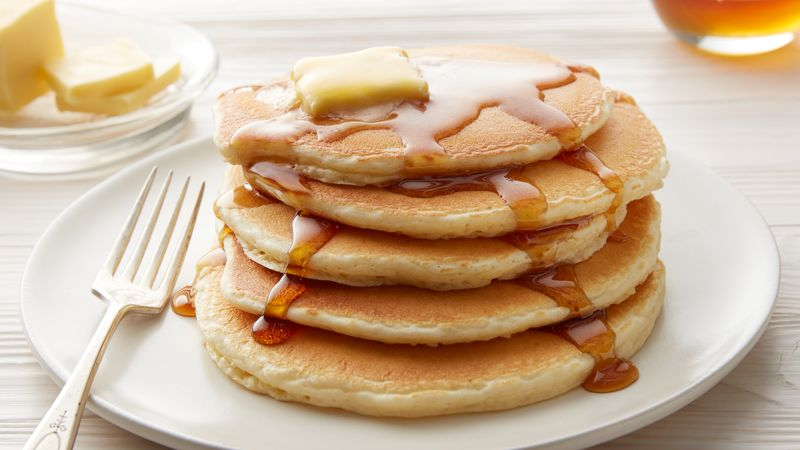

Pancakes

Description
These light and fluffy pancakes are simple to make and a treat to eat. The recipe serves two, or one hungry pancake lover. When in doubt, make a double batch!
Ingredients
- 1 egg (beaten)
- 1 cup buttermilk*
- 1/2 tsp baking soda
- 1/2 tsp salt
- 1 TB sugar
- 1 cup flour
*No buttermilk? No problem! Substitute 1 TB vinegar + milk up to one cup
Steps
- Combine egg, buttermilk, sugar and salt. Mix thoroughly.
- Add flour and baking soda. Mix gently. The batter should be a little bubbly.
- Drop by tablespoonful onto a moderately hot nonstick skillet and flip when the edges are slightly browned.
- Serve hot with a topping of your choice. I recommend maple syrup or powedered sugar!